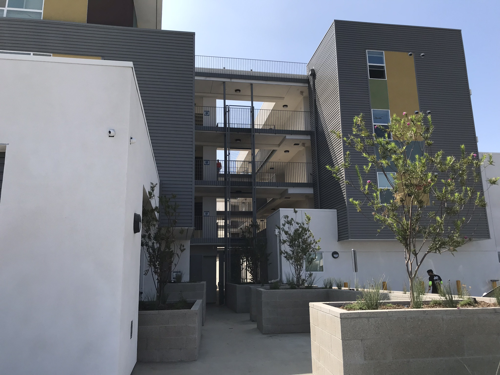

What The Shouting Down Of One Homeless Housing Complex Means For Us All
By Jill Replogle
Published Oct. 15, 2018
A skinny, unremarkable, triangle-shaped piece of land has brought a neighborhood in the city of Fullerton to a full boil.
The land is located between a busy thoroughfare and four sets of railroad tracks.
It’s surrounded beyond by middle-class neighborhoods.
City leaders were approached about building an apartment complex on this land.
The building would house about 60 people who are chronically homeless in the area and have a disability, which could include mental illness or a substance abuse disorder.
When neighbors learned about this potential deal, a battle began — the same kind that we've seen in Koreatown, Venice, Sherman Oaks, Irvine. The list goes on and on.
Community meetings were held. Facebook Live posts were streamed. There was a tour of similar developments in OC. There were phone calls. And letters. And angry social media posts. And more meetings and more calls and more letters and then last week ... the project imploded, before it even got started.
This is a breakdown of the breakdown. And if you live in California, a similar story might be playing out in a neighborhood near you.
An overhead view of the city-owned lot where Pathways of Hope wants to build permanent supportive housing for Fullerton residents who are chronically homeless. (KPCC)
Chapter 1
The Standoff
David Gillanders is standing in a 2.25-acre city lot, sweeping his tattooed arm toward the far end.
Gillanders heads Pathways of Hope, an organization that’s been providing food and shelter to homeless people in Fullerton and other north Orange County cities for more than 40 years.
At one time there was a tomato processing plant on this land. Now it’s a city maintenance yard.
He has a different vision — one that will give neighbors a better view than the orange cones and gravel there now.
David Gillanders, executive director of Pathways of Hope, a homeless outreach organization serving Orange County, at the proposed site of a new apartment complex for the chronically homeless in Fullerton. (Jill Replogle/KPCC)
"That whole end of the property is going to be green space," Gillanders explains.
The centerpiece of the lot will be an apartment complex, in Spanish mediterranean-style architecture, to house around 60 of the city's chronically homeless.
The tenants would get their own, subsidized apartment, and social services like therapy and substance abuse counseling. This model of addressing chronic homelessness — ppeople who have been living on the street for at least a year and also have a disability, including mental illness and addiction — is called permanent supportive housing. The approach has proven to be the best way to get and keep people off the streets.
Permanent supportive housing is a housing model that provides rental assistance and long-term supportive services to formerly homeless people, according to the U.S. Department of Housing and Urban Development.
"It's not a shelter," Gillanders says, brow furrowed. He's heard the misperception ad nauseum. "It's a solution to a problem everyone has been asking about for a long time."
The problem is, some neighbors don't see it as a solution at all. A small group has launched a loud campaign to block Gillanders' plan. They have no qualms about saying it, even yelling it: "Not in my backyard."
This is often shortened to NIMBY (Not in my backyard) or Nimbyism. It's defined as a "colloquialism signifying one’s opposition to the locating of something considered undesirable in one’s neighborhood" in the Encyclopædia Britannica.
There are mixed opinions on a housing development for homeless people proposed for the 1600 block of Commonwealth Avenue in Fullerton. (Kyle Grillot for KPCC)
Homelessness has reached crisis levels in many Southern California communities. And everybody wants a solution.
Fullerton — like cities throughout Orange County — is under pressure to house homeless residents.
The county has an ambitious new goal: Every city builds its fair share of 2,700 units of permanent, supportive housing.
Gillanders' project is the plan’s first big test, so lots of people are watching.
Perhaps no one more closely than the people who own homes nearby.
Nina Parker and her neighbors Philip and Stephanie Bromley live a few blocks from the lot where Pathways wants to build supportive housing for the homeless. They’re leaders of the opposition.
"Fullerton is known for its scenic trails," Nina Parker says across the table at a busy restaurant in the city's downtown. A waiter interrupts to drop an ahi sandwich in front of her.
"Now you see tents. Now you see garbage."
Parker and the Bromleys are grabbing lunch before a meeting with the city manager.
Philip Bromley owns a biotech firm, Virun, which makes nutritional foods and supplements. When he found out that the city was considering giving the land in his neighborhood to Pathways, he told the city he wanted to buy it and open a plant there. His offer has given neighbors who oppose the Pathways project a convenient alternative around which to rally.
The two women already manage a Facebook group that has become a forum for complaints about homelessness in the neighborhood, loosely known as Little Chapman-Adlena Park.
One recent post reads:
"Hello neighbors.
This morning I had the displeasure of seeing a homeless fellow wearing nothing but half-down jeans enjoying himself on somebody's yard off of King.
As kids were walking down little Chapman to school I opted to pull over in order to read him the riot act until he fixed his pants."
The Facebook group has also become the main platform for organizing opposition to the Pathways project.
Between mouthfuls at the restaurant, Bromley and Parker lay out their reasons why Pathways should house homeless people somewhere else:
Bromley: "I'm concerned that we're going to attract people from other cities and then they're going to become our responsibility."
Parker: "These facilities should be in industrial areas because they are not located close to parks or close to schools."
Bromley: "We spent a lot of money to buy homes and to get our kids to school. And, you know, just to live the American dream, and we feel like our safety and our well-being is being compromised and no one's thinking about us."
Kids splash around at Adlena Park, a few blocks from the site where Pathways of Hope wants to build housing for chronically homeless individuals. Some neighbors say they don’t let their children go to the park alone out of fear of homeless people who sometimes hang out there. (Jill Replogle/KPCC)
The two women say they feel compassion for the homeless. Bromley tells me she hands out McDonald's gift cards to homeless people she encounters around town.
But they're concerned about their kids’ safety, and maintaining the quality of their good, middle-class lives.
They're not the only ones. Several dozen people showed up to a city council meeting in June to rail against Gillander’s proposal. Far fewer people spoke in support of the project and those who did were less passionate than the opponents.
Parker delivered a tearful plea to the Fullerton City Council to vote against signing an exclusive negotiating agreement with Pathways. Such agreements are standard, first steps. Most developers won't waste time on a potential site until they have an agreement with a city to use the land as planned.
"You can't relocate more homeless to our area until you take care of what's wrong right now," Parker told council members, choking up. "This is my home, and I can't let you do this to my home."
Up until they heard from the angry neighbors at that meeting, the mayor and at least some of the city council members seemed ready to support the Pathways David's project.
The pivot was immediate.
"Frankly, it’s dead in the water unless the neighbors are at least lukewarm supportive," Council Member Greg Seaborn said at that June meeting. "If this thing goes forward, I know you’d do a great job. … But you need to convince everyone else of that, too."
So that's Gillanders' task: win over the neighbors. Or at least some of them. And then the city will decide whether to proceed with negotiations.
California is home to more than 30,000 unsheltered, chronically homeless people. If no one wants them living in their neighborhood, how will we ever get people housed and off the streets?
Chapter 2
The Tour
The Orchard in Santa Ana is a former motel remodeled to house chronically homeless individuals with disabilities. (Jill Replogle/KPCC)
I meet a small group in front of Fullerton city hall to take a tour of permanent supportive housing for homeless people.
I meet a small group in front of Fullerton City Hall to take a tour of permanent supportive housing for chronically homeless people in Orange County. We’re here because city council members and proponents of the Pathways project suggested it might be illuminating for residents to see some existing developments.
The hope of those backing the project is that the neighbors will get less fearful the more they know.
Councilman Jesus Silva is leading the tour. Kelsey Brewer, the now-former legislative affairs manager for OC's branch of the Association of California Cities is also with us. Brewer is one of the authors of a countywide plan to build 2,700 units of permanent supportive housing, spread throughout every city in Orange County.
Stop 1: Rockwood, Anaheim
Our first stop is the Rockwood Apartments in Anaheim. It's an attractive, 70-unit apartment building right next to Abraham Lincoln Elementary School.
Most of the units are for formerly homeless families. Fifteen of the units are for formerly homeless individuals with a history of mental illness. They all get onsite case management. Danielle Ball, who oversees supportive services for Jamboree Housing, which built Rockwood, shows us around.
Fullerton residents ask questions during a tour of the Rockwood apartments for formerly homeless individuals and families in Anaheim. (Jill Replogle/KPCC)
"All the kids, families, bring chairs out, blankets out, we pass out popcorn and do movie nights out here," she says, walking us through the spacious courtyard, which includes a private playground.
A few of the Fullerton neighbors note how clean and attractive the building is. But they have lots of questions about the tenants and how the apartments are managed. Top of the list: drug and alcohol use.
"Are there any restrictions on alcohol or drug use here?" Pat Ducey asks.
"Um, no," Ball says tentatively, perhaps sensing the coming storm. "If we see it in the community and it's causing a problem and a lease violation, then yes, they would get written up.
"We do not do checks for alcohol, we do not do checks for drugs."
This doesn't go over well with Christina Brittain.
At a prior city council meeting about the Pathways proposal, Brittain told council members that she was a long-time volunteer for Pathways and "loved" the organization. Then she vowed to sue if the city let Pathways house homeless people in her neighborhood.
"What I'm hearing from this is that our tax dollars, ultimately, are going towards supporting this," Brittain says. "And that if they're doing drugs in their own (apartment), that's their business.
"If you know about it, you try to help them, but don't force them to get help. … and they could live there for the rest of their lives and use drugs in the privacy of their own home. That's crazy."
Ball tries to explain that at Rockwood, like any, regular apartment building, the management can't just barge into someone's unit.
Plus, decades of research show that people who have spent years on the street are much more likely to stay housed if you give them a roof first and then address addiction and other mental health disorders.
It used to be standard practice among homeless aid organizations to require people to earn a place to live by first getting sober while living on the streets. It didn't work. The federal government has promoted a "housing first" model since the George W. Bush administration.
In 2017, 99 percent of formerly homeless individuals — 2,419 people — in permanent supportive housing in Orange County remained housed, according to county spokesperson Molly Nichelson.
Stop 2: Doria, Irvine
We head to our next site, on newly-developed land near the Woodbury Town Center shopping center in Irvine. It's an immaculate, 134-unit complex for low-income residents and formerly homeless individuals with mental illness.
It looks like any other new, resort-style apartment complex in Irvine. Stylish architecture; manicured grounds; a pool.
But here, things get even messier on the tour. Some of the neighbors had been live-streaming on Facebook. And the Doria's management won't let them record.
"So I'm going to waste my time having everything sugar-coated by these people?" a livid Shari Carter says outside.
Carter lives a few blocks from the site where Pathways wants to build in Fullerton.
"I'm so hurt and devastated over what's happening to our community," Carter says, holding back tears. "My husband worked hard for that house. And we just want to feel safe and they want to take that away from us?"
Carter is convinced that the Pathways project would ruin her dreams for a peaceful retirement. She does not seem open to being persuaded otherwise. She and her husband get into their truck and leave the tour.
Stop 3: The Orchard, Santa Ana
Our final stop is at a 71-unit former motel that's been converted into housing for former, chronically homeless individuals and couples. It has stylish, eco-friendly landscaping and a huge community food garden out back.
"We have security gates and security guards," says co-owner Kyle Paine, addressing a typical concern.
The Pathways project would also have security. But by this point it's become clear that some of the neighbors don't really care about assurances. They just want Pathways to house homeless people somewhere else.
"It's not that I don't want to help the homeless. I don't want it where it's proposed," saysa woman named Cat. She won't give me her last name.
Cat, who was one of the Facebook livers, has generated a local following in Fullerton by posting videos of her "interviewing" homeless people around town. She often asks her subjects if they want help and then berates them if they refuse or waver.
"Get a cell phone, you can call Bridges at Kraemer and get off the streets," she tells one man, who she just met. Bridges is a referral-only shelter that has been nearly booked solid since it opened last year. "I'm tired of my tax dollars going to people who won't f---ing get off the street," she tells the man in the video.
Fullerton resident Gretchen Cox asks a question during a tour of The Orchard apartments in Santa Ana. (Jill Replogle/KPCC)
Back at city hall, Gretchen Cox says the day was "very educational." It's the most positive comment I hear. Cox took copious notes on the tour to share with friends who live in the neighborhood where Pathways wants to build. (She lives in Fullerton, but not in the Little Chapman-Adlena Park neighborhood.)
"Seeing, first of all, how nice these places are," she says, "the one in Irvine, I mean, who would know that it was there?"
Cox also notes that the developments don't seem to be magnets for people still living on the streets.
But she's troubled that she doesn't see an incentive for people to move on from permanent supportive housing and become more independent.
"It's like going to the beach with a bag of french fries, when the french fries run out and you've got now 5,000 seagulls flocked all over you, what are you going to do?"
Curtis Gamble was homeless in Fullerton for eight years. Now he’s an advocate for the homeless, rarely missing a city council or county Board of Supervisors meeting where homelessness is discussed. (Kyle Grillot for KPCC)
Chapter 3
Living On Fullerton's Streets
"That bench right there," says Curtis Gamble, pointing out bus bay #3 at the Fullerton Transportation Center, "that's where I used to sleep."
Gamble is tall and burly with a salt and pepper goatee. He slept on the bench for eight years after he lost his job as a bus driver.
He says he had to sleep sitting up most of the time, because the city installed armrests that made it impossible to lay lengthwise.
Then Gamble won a legal settlement with the city in 2016 over Fullerton's failure to zone for homeless shelters, which is state law. He used his share of the cash settlement to get an apartment.
Curtis Gamble talks with an acquaintance outside of First Christian Church in downtown Fullerton. The church offers free meals every Wednesday evening. (Kyle Grillot for KPCC)
The bus depot is where a good number of the city's homeless population sleeps, hangs out and panhandles.
On the night Gamble shows me around, an elderly man nods off on the same bench where Gamble used to sleep. A group of people I met earlier at a soup kitchen socialize in another bay. They laugh at a woman sitting next to a pile of tattered bags, belting out raunchy lyrics at the top of her lungs.
Nearby, a signpost is adorned with a bouquet of fake flowers and a laminated picture of Kelly Thomas.
Thomas was 37 and living on Fullerton's streets when he died at the hands of Fullerton police officers in 2011.
A security camera caught the encounter on tape, in which Kelly repeatedly tells officers he can't breathe, says he's "sorry" and calls out for his dad. The footage is extremely disturbing.
Two officers were charged and acquitted in his death; charges against a third officer were dropped. There were big protests. The police chief resigned. Three city council members were recalled. And Kelly's parents won multi-million dollar settlements.
But the whole, terrible incident – and the fallout – didn't address the large number of people like Kelly, who was schizophrenic, living on the streets.
A few blocks away from the bus depot, volunteers serve up spaghetti at First Christian Church for anyone who needs a meal. Jacquie Nolan says they serve between 100 and 120 people every night, though not all are homeless.
People stand in line for dinner at First Christian Church on Sept. 26, 2018. (Kyle Grillot for KPCC)
Gamble keeps track of the time, day and location of all the free meals in Orange County in a one-page, homeless resource guide. He also notes places you can take a shower and get help finding housing. He carries copies of the guide with him to hand out.
Gamble carries around one-page homeless resource guides to hand out to people in need. (Kyle Grillot for KPCC)
Gamble's guide is part of the triage going on all over Southern California as the region grapples with a major crisis in homelessness. The number of people homeless in Orange County rose 13 percent from 2013 to 2017, according to the last official count.
In Los Angeles County, homelessness rose 34 percent over that time period, though it has since dropped slightly, according to a 2018 count.
An unusually large percentage of those experiencing homelessness here are unsheltered, meaning they live on the street. California, as a whole, accounted for nearly half of all unsheltered people in the country in 2017, an estimated 91,642 people, according to the U.S. Department of Housing and Urban Development.
Gamble in his studio apartment in downtown Fullerton. He was able to rent the apartment with the money he got from a settlement with the city of Fullerton over the city’s failure to zone for homeless shelters. (Kyle Grillot for KPCC)
If you want to know about being homeless in Fullerton, Curtis Gamble is your guy.
I sit across from Eve Lucas. She has long blonde hair and tanned, muscular arms and legs. She looks like at athlete, which it turns out she is. She plays softball every weekend at nearby Lemon Park.
Lucas was born and raised in Fullerton, and she's been living in her van for five years.
Fullerton native Eve Lucas has been living in her van for five years. “When someone asks me what I need for help, I say, ‘I don’t even know where to begin,’” she says. “I need a roof to start from.” (Kyle Grillot for KPCC)
"I really can't believe it's that long," she says. "It so happens I lost my place. … that wasn't even expected ever. And I've been here ever since," Lucas tells me.
She says she keeps trying to climb back into society, the part that's housed and working.
"I finally got work and then my car broke. I got hit on my bike. It all sounds like drama. And I just need that little bit of a boost to help me.
Jason Nielsen, a 43-year-old, Fullerton native with spiky hair and a prominent nose ring, walks with me outside after dinner. His plummet into homelessness started when his stressful, graveyard-shift job at a food processing plant got to be too much. His loud roommates wouldn't let him sleep in the daytime.
Nielsen says he packed up his stuff, put it in storage, and went off all his mental health medications, thinking it would help calm his anxiety.
"When you're under a lot of distress, and stress, you do things you normally wouldn't do," he says.
For several years, he filtered in and out of shelters, crashed for awhile with a relative in Nevada, who turned out to be an alcoholic, and slept in his car.
Just weeks ago, Nielsen moved into his own apartment in a permanent supportive housing complex built by an organization called A Community of Friends. It's in an area of Fullerton dominated by light industry and commercial strip malls.
ACOF had originally wanted to build the apartments in the same neighborhood that is fighting off Pathways' similar proposal now. The neighbors fought hard against it.
The organization was forced to find another site when the owner of the property they wanted to build on declined to give them more time to close escrow.
Because of the delays, the apartments Nielsen now lives in took five years to build and cost about $1 million dollars more than planned, much of it public funds, Dora Leong Gallo, president of ACOF, tells me.

The nonprofit A Community of Friends opened the 36-unit Fullerton Heights supportive housing complex in August 2018. It was built in a semi-industrial area of the city after residents fought hard against the organization’s original plan to build it in the Little Chapman-Adlena Park neighborhood. (Jill Replogle/KPCC)
She says the apartments' current location is on the margin of the type of location her organization considers acceptable.
"We want to make sure that people are in an area where they can thrive," Gallo says, "and that means access to amenities that all of us want: schools, grocery stores, transportation."
The site does have those things, but it's missing the kinds of amenities you get in a residential neighborhood, likes parks. And neighbors.
The apartment complex, which is modern and stylish, sits between a gas station and an office building. Across the street is a glass factory and another gas station.
Fullerton has actually done more than many Southern California cities to address homelessness. Nielsen and 35 other formerly homeless and low-income individuals and families are now housed.
The city also hosts a winter emergency shelter (though not by choice, it's owned by the National Guard), which is located a mile from where Pathways wants to build permanent supportive housing.
The armory shelter, as it's known, was not supposed to reopen this winter, under a deal struck after Fullerton agreed to pay for part of the Bridges at Kraemer Place shelter in Anaheim. But the city was recently asked to host it again, while nearby cities work to get more permanent shelters in place by next spring.
Still, a recent count found 230 people sleeping outside in the city. Experts say more emergency shelters are needed. But if there's no housing to follow, people are likely to return to the streets.
Nielsen is the type of person permanent supportive housing is intended to help — homeless for more than a year and struggling with mental illness.
I ask him, though it seems like a stupid questions, if it feels good to finally have his own place.
"Yes, yes it does," he says. "It gives you a starting point where you can rebuild your life."
Chapter 4
Homelessness 101
David Gillanders picks up the buzzy microphone at the Fullerton maintenance yard community room — right next door to the property where he wants to build supportive housing — and introduces himself.
It's the first community meeting Pathways is holding after city council members tasked the organization with warming residents to the idea of housing 60 chronically homeless individuals in their neighborhood.
The tour of permanent supportive housing units organized earlier was pretty small, only about 10 people took it. This meeting is for a much wider audience and the goal is to deliver a basic education on homelessness.
Jason Phillips, a pastor at Sojourners Church in Fullerton and a supporter of the Pathways project, emcees a community meeting about the project on Aug. 16, 2018. Phillips also lives in the Little Chapman-Adlena Park neighborhood. (Jill Replogle/KPCC)
Thanks everyone for being here, I'm David Gillanders, executive director of Pathways of Hope.
"So what we wanted to do was have Becks Heyhoe from Orange County United Way do her Homelessness 101 curriculum as we advertised on the flyer," he says.
Heyhoe queues up her slides on the projector. Who are Orange County's homeless?; Why are they homeless?; How much does homelessness cost taxpayers?
It's a two-hour presentation, condensed for the Fullerton neighbors. Heyhoe regularly delivers it to city and faith leaders, philanthropists and everyday residents.
Much of the presentation's Orange County specifics are based on a 2017 UC Irvine study that busted several common myths.
• Nearly 70 percent of homeless people surveyed for the study were long-term OC residents, not new arrivals;
• The inability to find or retain a job or affordable housing were cited as the top reasons for becoming homeless;
• Providing supportive housing to a person experiencing chronic homelessness is an estimated 40 percent less expensive than leaving them on the streets, where some are a heavy financial burden on cops and hospitals.
Fullerton residents listen as David Gillanders answers questions about the proposed permanent supportive housing development. (Jill Replogle/KPCC)
For the most part, people listen politely to Heyhoe's presentation. But about a quarter of the audience leaves before it's over, some of them in a huff.
I catch up with one woman in the hallway. She won't give me her name because she's worried about homeless people coming after her.
"They'll try and figure out where we live, they'll be camping on our lawns," she said, her agitation growing along with her list of potential retribution, "they'll break bottles in our street, they'll leave needles strewn around."
She flat out doesn’t believe that the lack of affordable housing is a major cause of homelessness in OC.
"You're homeless because you made bad choices and you ended up there," she said, adding she now planned to go to the city council meeting to protest the Pathways project.
Mychael Blinde, development manager for Pathways, greets meeting attendees. (Jill Replogle/KPCC)
The second community meeting was held a week later. Gillanders displayed questions on the overhead projector that neighbors had emailed in advance.
Will you allow residents to do drugs?
Gillanders says it's the single biggest question Pathways gets about its permanent supportive housing model. He explains that potential tenants won't be barred because of a history of drug or alcohol abuse. But they will get help getting sober as soon as they're tenants.
He also says Pathways "won't turn a blind eye to criminal activity."
Why do these homeless people get to live in free housing while I have to work hard every day to pay for housing on my own?
Tenants in permanent supportive housing pay a portion of their monthly income toward rent. Most have a mental illness or physical disability. Addiction to drugs or alcohol is a mental illness.
Gillanders talks about a man named RJ who was shot in the head during a home invasion. "RJ lived on the riverbed because he had chronic migraines that do not stop. And he cannot work and he will never work again a day in his life." Gillanders says RJ is a prime candidate for permanent supportive housing.
One day after the meetings, I sit down for a long chat with Gillanders, on the porch of a shelter run by Pathways near downtown Fullerton. I had questions.
Me: How do you think the community meetings are going?
Gillanders: I think there's still a lot of misunderstanding. A lot of our homeless folks on the street will not be able to bootstrap themselves through homelessness.
At one of the meetings, Gillanders had talked about a prime candidate for permanent supportive housing: a man named RJ. He ended up homeless, with debilitating migraines, after he was shot in the head during a home invasion.
"RJ lived on the riverbed because he had chronic migraines that do not stop," Gillanders said at the meeting. "He will never work again a day in his life."
Show me the math, the calculus on how many people are going to get sober on the street. Demonstrate for me how homelessness is ended with anything other than a set of keys, a lease and a place to call home.
Me: What do you make of people who say they love Pathways and volunteer with the organization, but still oppose housing the homeless in their neighborhood.
Gillanders: It's not souplessness, It's not clotheslessness. It's not showerlessness. It's homelessness.
Yes, handing out toys to families matters. Yes, everyone's got to eat. But while you're helping maybe pacify or improve someone's day or get their stomachs full, that is not the same as ending homelessness. It's just not.
Me: This must be the worst part of your job, trying to convince residents not to oppose your efforts to get people off the streets.
Gillanders: I'm not gonna tell you it's not exhausting. But it's also exciting. We have a massive need for this kind of housing. Most people don't even argue that at this point.
It is, in my mind, a moral issue of a country that's the richest that's ever existed, living in a county that is so wealthy, that can't figure out a way to provide for 2,700 people who are really, really vulnerable and die on the streets every year.
You add all those things up and it's hard to say that this isn't the right thing to do. But maybe you don't want it in your neighborhood. Okay, well, we can talk about that piece of it.
Chapter 5
There goes the neighborhood?
Gillanders seems sanguine about people not accepting supportive housing in their neighborhoods, which I find puzzling. He says the lot where he wants to build in Fullerton is the only available option. Pathways has a modest budget. It needs the city to donate the land. And the Little Chapman-Adlena Park neighbors seem entrenched in their opposition.
Residents opposed to the Pathways housing proposal often cite an impromptu, homeless safe haven at a nearby church as both an example of how west Fullerton already does its fair share to help the homeless, and as a magnet attracting undesirables to their neighborhood.
The church, St. Philip de Benizi, lets a few dozen people sleep in the large parking lot of the church, every night. It’s located about a mile from where Gillanders wants to build his supportive housing apartment complex.
I was there this summer when Father Dennis Kriz leds a prayer session before a community meeting to discuss Pathways of Hope's supportive housing plan. About 20 people lean against a wall next to the empty lot where the apartments would be built, following along in prayer.
"Here we remember that Jesus came to his hometown and he proclaimed good news, above all, to the poor," he says.
Kriz says, the church didn’t plan on letting people sleep in their parking lot, but when they showed up church leaders didn't kick them out.
And then more came.
"I started to see this, honestly, like a slow-moving refugee crisis," Kriz says.
Earlier this year, the church held a community meeting to float the idea of starting a more formal, safe parking program.
"We had some people who are radically opposed to it," Deacon Richard Doubledee says. "There was a point where someone tried to take over the meeting … and one of the parishioners stood up and defended what we were doing."
Still, Doubledee concedes that even some of the faithful don't like the idea.
"We don't know that we've overcome all the fears," Doubledee says. "Until you see it work, you're going to be afraid."
Fear of people with mental illness or substance abuse problems — which commonly occur together — is not unfounded. Extreme manifestations of both can be scary, and dangerous.
Bad experiences can test people's good intentions.
Earlier this year, a church in Fullerton agreed to host an emergency homeless shelter for a few days while the Armory shelter was being used by the National Guard. A man on his way to the church shelter wandered into someone's house, and then followed a young girl into the bathroom.
Nothing further happened. But it understandably shook up the family, and the larger faith community.
That incident stemmed from someone staying at a temporary shelter, not in permanent supportive housing.
I want to test out the fears I'd heard from the Little Chapman-Adlena Park neighbors about housing the homeless — about declining property values and rising crime.
So housing reporter Matt Tinoco and I decide to canvass a neighborhood that’s been the location of a supportive apartment complex for formerly homeless people that's been in Anaheim since 2008.
The 25-unit Diamond apartments faced fierce opposition when they were proposed. It was Anaheim's first experience with permanent supportive housing and only the second in the county.
Community opposition delayed the project for two years.
Now it's the nicest building on a block of aging, small apartment buildings and single-family homes.
Most of the apartments at Fullerton Heights are for formerly homeless individuals, but 12 are for low-income residents. A Community of Friends, which runs Fullerton Heights, got 189 applications for those 12 units, highlighting the demand for affordable housing in the city. (Jill Replogle/KPCC)
So I was looking at the map. Yeah I was just looking at it.
Tinoco and I split up to start knocking on doors. Tinoco catches up with John Rutherford, who's out walking his dog. His house, where he's lived for 20 years, is right across the street from the Diamond apartments.
"I haven't had too much trouble with them, to be honest with you," he says.
"They get the police down there every once in awhile."
Rutherford says he's met some of the residents on walks.
"I guess they're pretty strict with them," he says. "A couple of them complained to me that they inspect their house, make sure they're keeping their apartments clean and everything."
Residents get their apartments inspected as a requirement of the federal Low-Income Housing Tax Credit program, which partially funds Diamond and many other affordable and supportive housing developments across the country.
Anaheim spokesperson Mike Lyster later confirms that police do get called out to Diamond more than to other apartments. But he says that's because the management runs a tight ship, and because the city wants to make sure there aren't any problems for the neighborhood.
Tinoco and I talk to about 30 neighbors over the course of several hours. Most people tell us they didn't know that formerly homeless people lived at Diamond.
"I thought they were just regular apartments," says Marta Lozada in Spanish.
She's lived in her house for almost 10 years and says the neighborhood is tranquil. Still, she doesn't feel comfortable letting her adolescent kids walk to school alone because of the RVs, in which homeless people live, parked along their route.
"They run ahead and leave me behind, and I don't know if someone is going to pull them into their car," she says.
Academics and policymakers have done a lot of research on how affordable housing affects neighborhoods, but less about permanent supportive housing, specifically.
Ingrid Gould Ellen at New York University's Furman Center for Real Estate and Urban Policy authored a study that looked at the effect on nearby property values of all supportive housing built in New York City from 1985 to 2003 — 7,500 units in 123 developments spread across higher and lower density parts of the city.
She found that property values within 500 feet of supportive housing tend to increase more than those in the surrounding area in the years following a supportive housing development's completion.
Houses a bit further away, between 500 and 1000 feet from supportive housing, initially dropped in value during construction, but then rose after completion.
Gould Ellen hypothesizes that "community uneasiness about the housing" might contribute to that initial drop, which disappears as time goes by and actual experience overcomes fear.
"We found no evidence that the homes near to supportive housing suffered because of their proximity to supportive housing," Gould Ellen told me. on the phone.
Other studies, in Philadelphia and across Delaware, came to similar conclusions.
Los Angeles is collecting millions in Measure HHH funds to build supportive housing throughout the city. But it's already having trouble keeping up with the goal of building 10,000 units over the next decade.
Orange County cities plans to start pooling public and private funds to build supportive housing via the newly created OC Housing Finance Trust.
Proposition 1 and 2, both on the November ballot, would, if passed, bring in millions more to build supportive housing. The question is: where will be build it?
Chapter 6
No Vote
Fullerton City Council holds a regular meeting on August 21. The Pathways project isn't on the agenda. But more than 30 people in yellow shirts fill the small chambers to show opposition to the homeless housing proposal.
Afterwards, I talk to Stephanie Bromley — one of the women opposing the project who had lunch with me WHEN. She's the kind of neighbor Pathways director David Gillanders hoped might be persuaded to change her mind.
She hasn't. First she tells me she was disappointed about the format of community meetings, where Pathways primarily answered questions that had been pre-submitted. I ask if she has outstanding questions about the project.
"There's really nothing else I need to know. I know that it's basically a wet house," Bromley says, referencing the fact that residents aren’t required to be sober. "It's like enabling, where's the incentive to get clean and do better?"
Opponents of the Pathways supportive housing proposal wear yellow shirts at a Fullerton City Council meeting on Aug. 12, 2018. Opponents spoke against the project at every meeting held in recent months. (Jill Replogle/KPCC)
Nina Parker, who’d also been at that lunch, told me at an earlier meeting that she hadn’t wavered in her opposition either.
"We have absolutely every support for his cause and his purpose, it's just that this isn't a suitable location because of the close proximity to the schools and our homes and our families, to a liquor store, to a park," Parker said at the time.
Not all neighbors oppose housing homeless people near them. Jennifer Knoll is one of them. She works in the mental health field, sometimes with people experiencing homelessness.
"I don't see the level of risk that some of my neighbors see," Knoll tells me. She doesn't understand her neighbors' concerns that the Pathways development would bring more homeless people to neighborhood parks and public spaces. "Why would they be on the streets if they have an apartment to go to?"
Knoll feels like she's been shunned because of her support. She was dropped from Bromley and Parker's Facebook group after she started her own neighborhood Facebook group, one where the conversation is far less confrontational and angry.
City officials had been wavering on the specific date they planned to revisit the exclusive negotiating agreement with Pathways. But they had finally said a vote was likely to happen Oct. 16.
Then, barely a week before the vote, Gillanders pulled the plug. ("Press pause" is how he put it in a news release).
He cited uncertainties in the political climate caused by an ongoing federal lawsuit over the lack of shelter space in Orange County, and several initiatives on the November ballot that could change the funding structure for supportive housing.
Less publicly, Gillanders concedes he didn't have enough votes on city council. Two council members are up for re-election (they're actually facing off, in a quirk of the city's recent change from at-large to by-district voting).
Pathways will reconsider the project in 2019.
More than 190 homeless people died on Orange County streets last year. Gillanders says the housing his organization wants to build would save lives.
When I meet with him to talk about the decision, he seems less bummed than I expected.
"We didn't get into this with any kind of idea that this was going to be easy," he says. "We'll be fine. I'll be fine. But this isn't about us, this is about the people we're trying to help, and it's not fine for them."